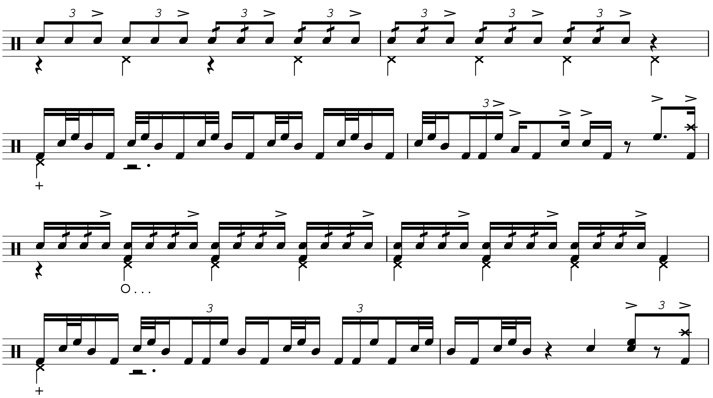

Transcription: “Keep The Customer Satisfied” — Steve Gadd with The Buddy Rich Big Band

This will be the first in a series of posts concerning the 1989 Buddy Rich Memorial Scholarship Concert, filmed in Los Angeles at the Wiltern Theatre. It’s a night that I consider to be one of the greatest moments in drumming history. Shamefully, it’s difficult to get a personal copy of the show; DVD’s haven’t been made since a limited run in 2006 (and as such are obnoxiously expensive), while only snippets are available on YouTube. Alfred offers a stupid digital streaming thing if you want to watch it on their website, broken up into chapters. I’ll save you the trouble, it’s a pain to use if you want to rip the concert to your library. It also has stupid shit like these annoying right-channel clicks on Dave Weckl’s performance. Of course, the clicks are nowhere to be heard on VHS rips. What a joke. I ended up using the streaming thing to rip audio into my library, while using Rx7 to clean up the clicks.
Several of these memorial gigs are reported to have happened, but only 3 of them were recorded: this one, the 1992 show, and a 2008 show. I really don’t know how many of these concerts have taken place. I’ve seen vague references on forums to a performance earlier in 1989, and other references to ones from ’88 and 2012, but nothing in the way of helpful details. Personally, I think the ’89 concert is the best of the three official ones, in terms of performances and recording. The band and the drums all sound amazing — the head engineer for the show was Jack Jospeh Puig, ICYWW. I wish I could speak as highly of the clowns that maintained the footage over the years.
The lineup from the ’89 concert includes Louis Bellson, Gregg Bissonette, Dennis Chambers, Dave Weckl, Vinnie Colaiuta, and Steve Gadd (check out the setlist here). It’s this concert that gave us the famous drum-off featuring Vinnie, Steve, and Dave. You can see what the idea was, getting the best drummers in America and having them rock out two charts each with Buddy’s band. I have a hunch there were supposed to be more than ~3 of these things; in fact the plan could have even been to make them an annual event. I think the scholarship still exists, under a different name.
Anyway, I have something from every drummer to share, so I’ll be making a post about all six of them. I’m starting off with Steve, because why not? I figured this week was an appropriate time to start: the 31st anniversary of the concert is this Wednesday, October the 14th.
The tune in particular is “Keep The Customer Satisfied”, originally written by Paul Simon and arranged here by Bill Holman. I don’t know how Buddy became such a fan of this track, since it doesn’t seem like he had a high opinion of pop music, but whatever. The chart calls for an open drum solo in the middle of the tune, and Steve plays one of the more modest solos of the night.
There are a lot of familiar licks that Steve Gadd fans should recognize: open-handed hi hat playing, the Gadd-a-macue, swung six-stroke rolls, and offbeat hertas. Notice how most of the solo is straight, giving Steve the opportunity to do stuff like whip out a variation of his paradiddle groove — well, this version doesn’t really feature paradiddles but he’s going for a similar thing:
Notice this cool little call and response thing Steve does with himself at the 3:58 mark:
It starts with triplet five-stroke rolls before a bar of his usual herta fills. He then straightens out the five-stroke roll as sixteenths, before a gnarly measure of hertas mixed with sixteenth notes triplets on the kick.
He ends the solo with his take on the Bonham Triplet, played as nonuplets (one of my favorite tuplets):
Posted on October 11, 2020
Tags: 2020 • Transcription • Steve Gadd • The Buddy Rich Big Band • 1989 Buddy Rich Memorial Concert